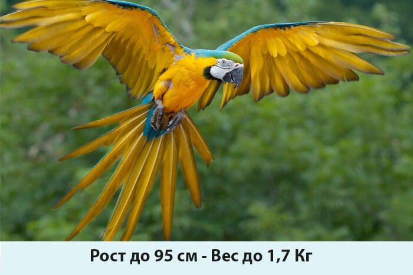

На сегодняшний день на планете живет около 350 видов попугаев. Из них крупные породы представлены в незначительном количестве. Некоторые из них находятся под угрозой вымирания и занесены в Красную книгу. Цены на таких питомцев высоки, но и спрос на них не угасает.
Отличительной особенностью является незаурядный ум, который позволяет пернатому без проблем заучивать слова и даже предложения. Очень любит общаться с людьми или другими попугаями. Это одна из самых популярных пород пернатых, которых приобретают в качестве домашних питомцев. Владельцы отмечают громкий голос, стойкое желание быть главным и постоянное требование внимания, как главные недостатки породы. Но эти проблемы можно убрать благодаря воспитанию, особенно если заняться им сразу, после приобретения молодого птенца. За покупку придется отдать не менее полутора тысяч долларов.
